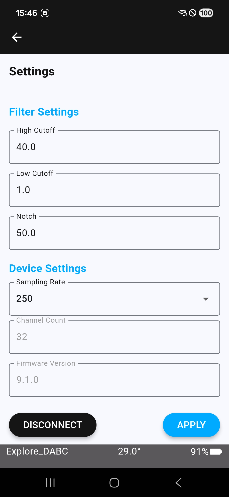

Settings
Use the Settings page to configure the visualization filters and your Explore device.
To open the Settings page, tap the gear icon in the top left corner of the ExG tab. Settings cannot be opened from the IMPEDANCE tab, while recording, or while streaming via LSL.

The Settings page provides filter and device configuration options.
Filter settings
The filters are applied to the ExG data on the ExG tab. Low Cutoff and High Cutoff set the lower and upper limits of the bandpass filter in Hz. The defaults are 1 and 40. Notch sets the frequency of the notch filter in Hz. The default is 50. Use 50 or 60, depending on the power line frequency in your country.
Tap APPLY to apply the filters. Both cutoff frequencies must be at most half of the sampling rate, and High Cutoff must be higher than Low Cutoff.
| Filters only affect the display. Recorded data and data streamed via LSL are always raw. The filters are reset to their defaults each time you connect to a device. |
Device settings
To change the sampling rate, select a value in Sampling Rate and tap APPLY. The list only contains the sampling rates that your device supports. The page also shows the channel count and the firmware version of the device.
Offline sampling rates
Depending on the device, offline sampling rates of up to 8000 Hz are available.
At an offline sampling rate:
-
The device records to its internal memory only.
-
Visualization, recording in the app, and LSL streaming are not available.
While the device is set to an offline sampling rate, it is not allowed to leave the Settings page. To return to live data, select an online sampling rate.
To transfer the recorded data from the internal memory of the device to a computer, see Data Transfer from Device Memory (USB-C).
Device functions

In the lower part of the Settings page, you can:
-
disconnect from the device
-
import and export device settings, see Import and export device settings
-
format the device memory, which erases all data in the internal memory of the device
-
restart the device with a soft reset
| Formatting the device memory permanently deletes all recordings stored on the device and not recoverable. Transfer your data before you format the memory. |
Import and export device settings
Save the sampling rate and the electrode assignments of a device to a file, and load them again later.
Tap IMPORT/EXPORT DEVICE SETTINGS to open the Device Settings dialog. Use Export settings to save the current settings to a file and Import settings to load them again. The file must be from a device with the same channel count. Import last session settings restores the last saved settings of this device.
On Android, the dialog also contains Export log files. Use it to save the log files of the app, for example to send them to Mentalab support.
Exported settings files are saved in the Device settings folder. On Android, this folder is in Download > Mentalab Explore. On iOS, open the Files app and go to On My iPhone (or On My iPad) > Mentalab Explore.
Filter settings are not saved in settings files.